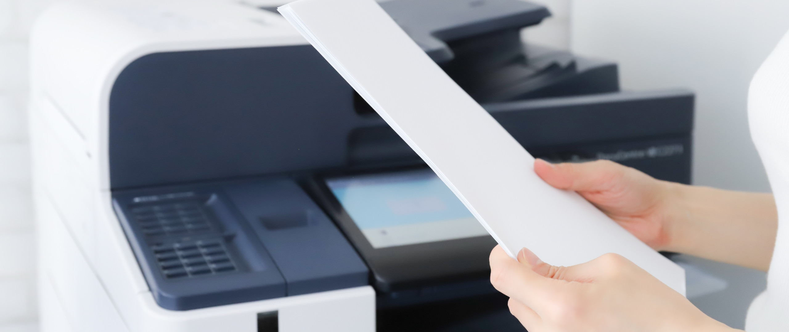
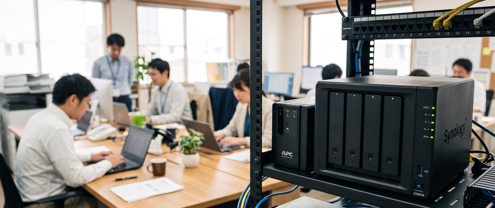
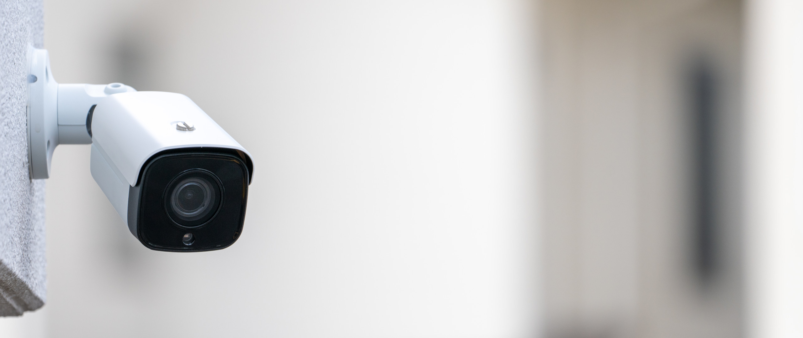
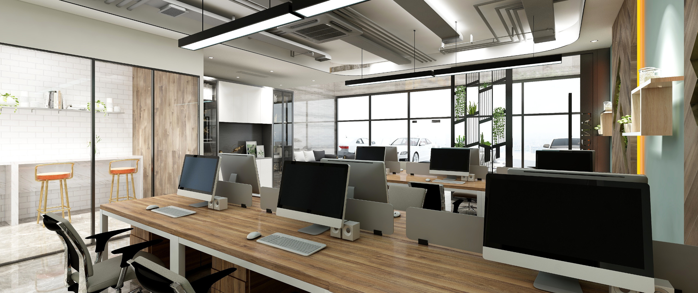
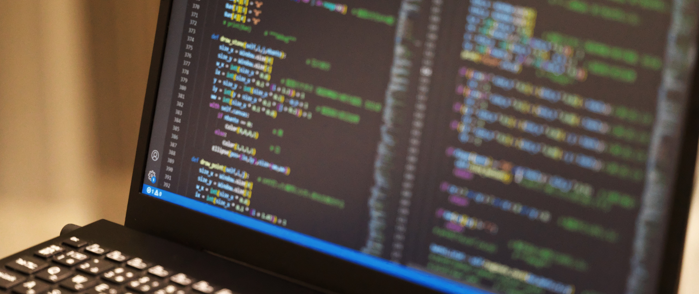

北九州で輝くすべての企業へ、確かなチカラと未来を。
事業内容紹介

業務を止めない信頼の品質と、安心のフルサポート。
コピー機・複合機
クリアな通信とコスト削減で、オフィスのつながりを強化。
ビジネスフォン・ひかり電話

快適な動作と堅牢な管理で、社内IT環境を最適化。
パソコン・サーバー

24時間オフィスの安全を見守る、確かな安心と防犯対策。
防犯カメラ・ネットカメラ

高速・安定・セキュア、ビジネスを支える強固な通信基盤。
ネットワーク設計構築

企業の魅力を最大限に伝え、成果を生み出すWebサイト。
Web制作（ホームページ）